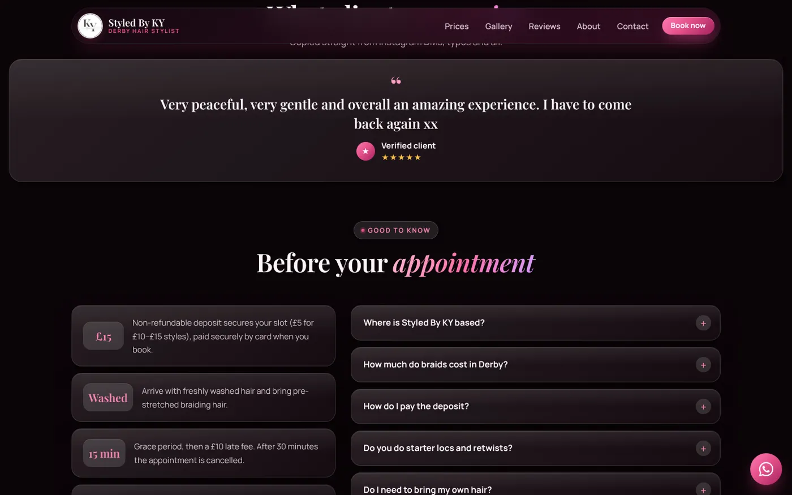
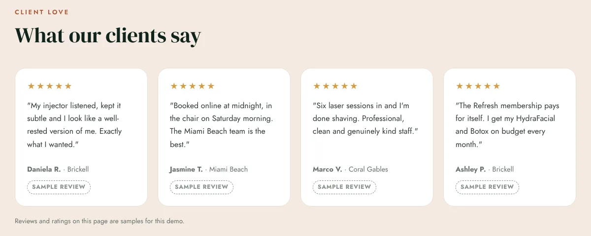
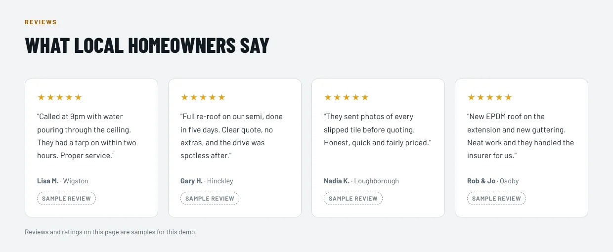

How to Show Reviews on Your Website Honestly (UK Guide)

It's half ten at night and someone is choosing between two barbers. Both have nice photos. One has a "Testimonials" box with three five-star quotes from "John", "Sarah" and "A Happy Customer".
The other has a slightly scruffy review from a named regular, with the date and a typo in it. Guess which one gets the booking.
Reviews do a lot of the heavy lifting when someone's deciding whether to trust a business they've never used. They only work if people believe them, though. Here's how to show yours so they actually land, and stay on the right side of the law while you're at it.
Your website needs its own reviews, not just Google's
Your Google reviews sit on your Google Business Profile. Lots of customers never see that, because they found you on Instagram, a flyer, a van or a friend's text, and went straight to your site.
If your website has no reviews on it, those people are deciding with half the picture. Putting a handful of real ones on your own pages means the proof is right where the decision gets made.
Getting the reviews in the first place is a separate job. If you haven't set up your Google profile yet, our guide on getting your business on Google Maps walks through it.
Fake reviews aren't just naff, they're banned
Since 6 April 2025, the Digital Markets, Competition and Consumers Act has made fake reviews a banned practice in the UK. That covers writing your own, getting mates to post ones that pretend to be customers, and paying for reviews without saying so.
The Competition and Markets Authority has published guidance on fake reviews explaining what businesses must and mustn't do. It also covers showing reviews in a misleading way, such as hiding the bad ones or making them hard to find.
We're not lawyers, and this isn't legal advice. The short version for a small business is simple enough: only show reviews from real customers, don't change what they said, and don't pretend the negative ones don't exist. If you're unsure where the line sits for you, read the guidance itself. It's free and in fairly plain English.
Use their words, typos and all
A polished testimonial that reads like a brochure makes people suspicious. A real message with a missing comma and two kisses on the end sounds like a person, because it is one.
If a review is long, you can show a short section of it, as long as you don't change what it means. Cutting "the cut was great but he was 40 minutes late" down to "the cut was great" is exactly the sort of thing the rules are there to stop.
Show where each review came from
An anonymous quote could have been written by anyone, including you. A few small details make a review believable:
- A name. First name and initial is plenty. Ask the customer first, and leave the name off if they'd rather.
- A place. "Wigston" or "Derby" tells a local reader this was someone like them.
- The service. "Full detail" or "medium knotless" helps people picture their own job.
- The source. Google, Facebook, an Instagram DM or a text. If it's on Google, link to your profile so people can check.
- A date, if you've got one. A review from last month beats one from 2019.
Let the less glowing ones in
This is the bit most businesses get wrong. A wall of perfect five-stars looks too good to be true, because it usually is.
OTR Detailing, Gideon's mobile valeting business in Coventry, has a reviews page on his site. Behind it, his private booking manager lets him approve genuine reviews before they appear, and that includes the less glowing ones. The check is there to make sure a review is genuine, not to quietly bin the honest four-stars.
When you do get a mixed review, reply to it calmly and say what you did about it. "Sorry about the wait, we've since moved our Saturday slots" tells the next customer far more about you than another "Amazing!!!" ever could. Try not to reply at 1am after a long day. Nobody has ever written a good review reply at 1am.
What we do on our concept sites
Our demo sites are concept sites, not real businesses. They have no real customers, but a reviews section is part of what we're showing, so we fill it with placeholder reviews and label every single one.

That's the same rule we'd give you. If your business is new and you've only got two reviews, show two. Don't pad the section out with placeholder quotes and hope nobody notices.

When there are no reviews at all yet, leave the section out. A link to your Google profile with "Read our reviews on Google" does the job until you've got some.
Put them next to the decision
A separate "Testimonials" page that nobody clicks doesn't do much on its own. A dedicated reviews page is fine, but the reviews that earn their keep are the ones people see right before they act.
- On the homepage, under your services or prices, so trust arrives just after the price does.
- Next to the booking or quote button, one short review that answers the biggest worry ("turned up when he said he would").
- On each service page, a review about that service. A loft conversion review on the loft page, not the bathroom one.
- On your contact page, because that's where people have their last wobble.
Do this today
- Gather your real reviews from Google, Facebook, texts and DMs into one note on your phone.
- Ask permission from anyone whose message you'd like to use, and check how they want their name shown.
- Pick five or six that each say something specific: punctuality, price, tidiness, the result.
- Copy them word for word, with a first name, an area and where the review came from.
- Add one review next to your main booking or quote button.
- Delete anything you can't back up, such as quotes with no name you can't trace, or reviews a mate wrote as a favour.
If you'd like a second opinion, our free website audit looks at how your reviews and the rest of your site come across to a stranger. If you need a site that's built to show them properly, our websites are fixed prices: £350, £600 or £800, paid once.
FAQ
Can I put my Google reviews on my website?
Yes. You can copy them onto your site word for word (ideally with the reviewer's OK), or link to your Google profile so people can read them all. Linking to the source makes them easier to trust.
Is it illegal to post fake reviews in the UK?
Yes. Since 6 April 2025, fake reviews have been a banned practice under the Digital Markets, Competition and Consumers Act. That includes writing your own and hiding the fact that a review was paid for or rewarded.
Can I remove bad reviews from my website?
You can remove spam, abuse or reviews that aren't from real customers. Hiding genuine negative reviews to make your rating look better can count as misleading under the CMA's guidance, so reply to them instead.
Can I correct spelling mistakes in a customer's review?
It's safest to leave the words as they are. Real messages with the odd typo tend to be more convincing anyway, and changing a review risks changing what the customer meant.
Not sure your reviews are doing their job?
Send us your web address and we'll look at your reviews the way a new customer would, then tell you what to change. The audit is free.